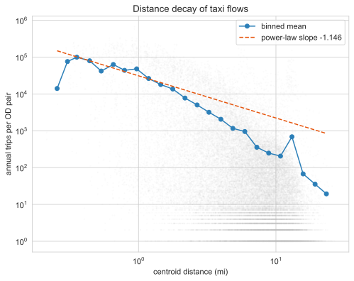
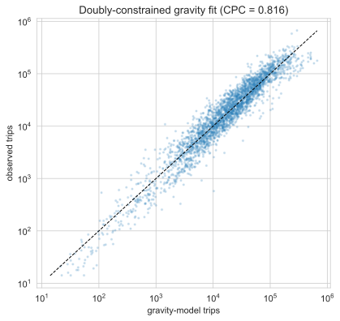
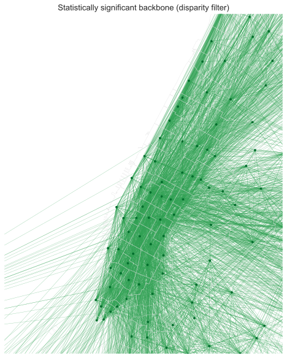
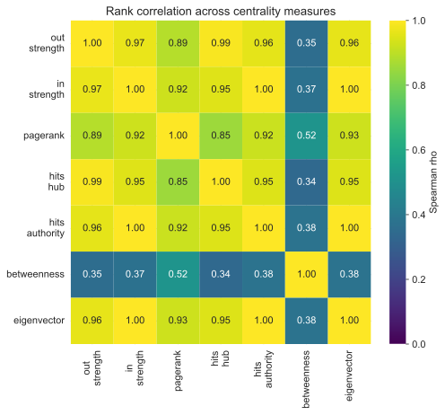
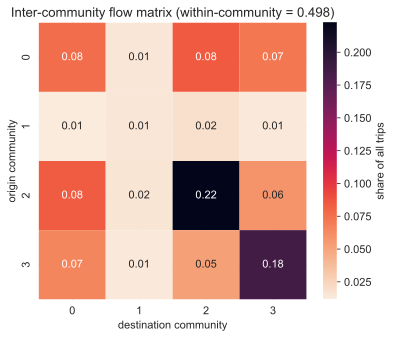
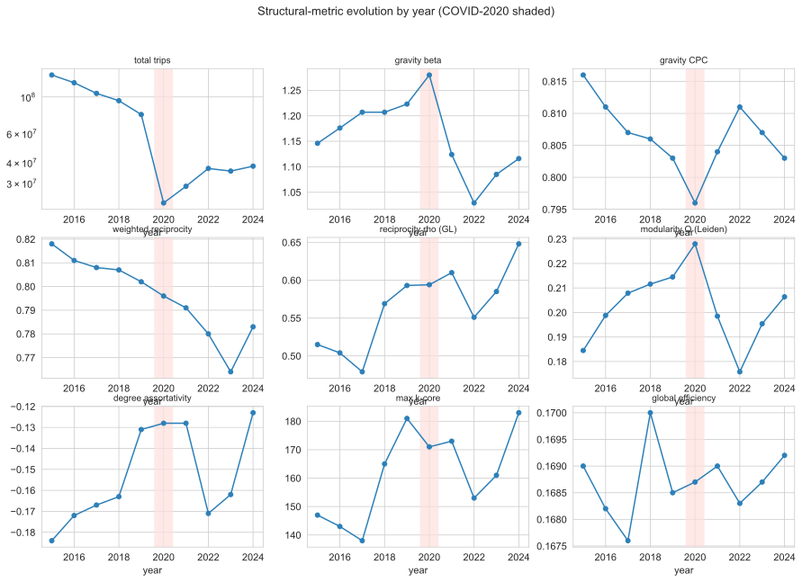

Method: how the taxi flow network is built and read
Every number on this page comes from one pipeline run over 142,199,201 yellow-taxi trips, the 97.4% that survived cleaning. The graph it builds is small enough to read by eye and structured enough to argue with. What follows is how it is built, and how each measurement is meant to be read, including the places where the data answers a narrower question than the one you might want to ask.
A transportation network is a deceptively simple object: take every trip, write down where it started and where it ended, and add up the trips between each pair of places. The 2015 yellow-taxi parquet had already been re-coded from raw latitude and longitude to the 263 TLC taxi zones, so the natural unit is the zone, not the census tract the 2016-17 student version used. That re-coding is a constraint, not a choice. There are no point coordinates to recover, so the nodes are zones and everything downstream inherits that resolution.
Building the OD graph
Let each taxi zone be a node. For every ordered pair of zones \((i, j)\) the edge weight \(w_{ij}\) is the number of trips that began in zone \(i\) and ended in zone \(j\) across all of 2015. The result is a directed, weighted graph: direction matters because a morning flow into Midtown is a different fact than the evening flow out, and weight matters because the busiest edges carry millions of trips while the median edge carries a handful.
The 2016-17 pass treated the graph as undirected and counted a single degree per node, which collapsed exactly the asymmetry that turns out to be the interesting part. Keeping the direction is the single most consequential modelling decision here.
Two bookkeeping facts shape the node and edge counts. First, 4.5% of trips are self-loops, trips that start and end in the same zone; these are dropped from the off-diagonal flow analysis because a zone-to-itself trip says nothing about between-zone structure. Second, the full graph has 262 active nodes and 42,347 directed edges, but most of those edges are noise: the mean in-degree is 162, and the long thin tail is single-trip pairs. The 2016-17 project handled this with a flat rule, keep edges with more than 500 trips per year, which leaves 7,945 edges over 228 nodes carrying 98.6% of all trips. That cut is honest but arbitrary; a principled alternative appears below.
The doubly-constrained gravity model
The oldest idea in spatial interaction is that flow between two places grows with their size and falls with the distance between them, like gravity. The naive version fits trips against the product of origin and destination activity and a distance term. On this data that version is close to circular: the only measures of zone "size" available are the taxi marginals themselves, the row sums and column sums of the same OD matrix being fit. A model that predicts taxi flow from taxi volume reconstructs more than it explains. Fit that way the Euclidean decay exponent lands at \(\beta = 0.72\) with a pseudo-\(R^2\) of 0.94, which sounds impressive and means little.
The non-circular version is the doubly-constrained gravity model. Instead of treating the marginals as predictors, it conditions on them exactly. The expected flow is
$$ \hat{T}_{ij} = A_i\, O_i\, B_j\, D_j\, f(d_{ij}), \qquad f(d_{ij}) = d_{ij}^{-\beta} $$
where \(O_i\) is the total outflow of zone \(i\), \(D_j\) the total inflow of zone \(j\), and \(d_{ij}\) the centroid distance. The balancing factors \(A_i\) and \(B_j\) are solved iteratively so that the predicted row and column sums match the observed ones exactly:
$$ A_i = \frac{1}{\sum_j B_j\, D_j\, f(d_{ij})}, \qquad B_j = \frac{1}{\sum_i A_i\, O_i\, f(d_{ij})} $$
Because every zone's own production and attraction are now held fixed, the model can no longer take credit for the fact that Midtown is busy. The only free parameter left to explain structure is the distance function, and all the residual signal is genuinely about who connects to whom given how big they are and how far apart they sit. Calibrated this way the decay exponent rises to \(\beta = 1.146\), steeper than the circular fit because distance now has to do the work the marginals were quietly doing before.

How well the model fits is best judged not by \(R^2\) but by the Common Part of Commuters, the share of total flow that the model places on the right edges:
$$ \mathrm{CPC} = \frac{2 \sum_{ij} \min(T_{ij},\, \hat{T}_{ij})}{\sum_{ij} T_{ij} + \sum_{ij} \hat{T}_{ij}} $$
It runs from 0 to 1 and is unforgiving: it rewards a model only for flow it puts in the correct cells. The doubly-constrained fit scores \(\mathrm{CPC} = 0.816\) over the high-coverage core. That is a good fit for a model with one shape parameter, and the 18% it misses is exactly the part worth mapping.

Where Manhattan ends
The residual of the doubly-constrained model is a per-zone statement, not a per-edge one. For each zone, average the signed deviance residual \(T_{ij} - \hat{T}_{ij}\) over its edges. A negative average means the zone is under-connected: it carries less taxi flow than its size and location predict. A positive average means it is over-connected. Because the model already controls for each zone's own volume and for distance, the residual cannot be explained by "it's small" or "it's far." It measures something closer to functional centrality.
Read this way, the most under-connected core zones are not on the edge of the map at all. Upper East Side North sits at a surprise of \(-20.3\), Upper West Side South at \(-16.3\), and the rest of the Upper East and Upper West Sides follow close behind. The East Village and Alphabet City are under-connected too, at \(-5.1\) and \(-4.3\), despite sitting near the geographic centre. The most over-connected zones are the obvious magnets: Times Square at \(+9.4\), Midtown South at \(+6.3\), Clinton East at \(+5.2\).
The phrase "where Manhattan ends" is a claim that functional Manhattan, the part wired into the taxi network beyond its sheer size, ends well inside the island's geographic edge. The residential Upper East and Upper West Sides and the East Village are peripheral despite their central addresses; the commercial spine from Times Square through Midtown is the real core. This is a gravity residual, not a popularity ranking, which is the whole point: it survives controlling for volume.
The disparity-filter backbone
The flat ">500 trips" cut keeps loud edges and discards quiet ones, but loudness is relative. An edge of 600 trips out of a zone whose busiest edge carries a million is statistical noise; an edge of 600 out of a sleepy zone whose total outflow is 2,000 is that zone's defining connection. A global threshold cannot see the difference because it ignores the local context of each node.
The disparity filter fixes this by asking, for each node, whether each of its edges carries more weight than a uniform random split of that node's strength would produce. For a node of degree \(k\), normalise its edge weights to fractions \(p_{ij}\) that sum to 1, then keep an edge only if its fraction is significant under the null that the \(k\) fractions were drawn uniformly at random:
$$ \alpha_{ij} = 1 - (k-1)\int_0^{p_{ij}} (1-x)^{\,k-2}\, dx \;=\; (1 - p_{ij})^{\,k-1} $$
Edges with \(\alpha_{ij} < 0.05\) survive. An edge is kept if it is locally salient at either of its endpoints, so a quiet zone's lifeline is preserved even when the busy end would have discarded it.

The backbone keeps 6,190 edges over 262 nodes and still carries 87.6% of all trips. The flat threshold needs 7,945 edges to reach 98.6%. The backbone is sparser and trades a little volume coverage for a defensible criterion: every edge it keeps earns its place against its own node's profile rather than against a number chosen by hand.
Directed centralities and core structure
With direction preserved, a zone can be important in more than one way. Strength counts trips; PageRank counts flow that arrives via important neighbours; the HITS hub and authority scores separate "places people leave from" from "places people go to"; betweenness counts brokerage along shortest paths; eigenvector centrality counts being connected to the well-connected. The question is whether these measures see different things or just rank the same hubs over and over.

Mostly they agree. PageRank correlates with in-strength at \(\rho = 0.92\), and in-strength with eigenvector and HITS-authority at \(\rho \approx 0.997\). The exception is betweenness, which sits at \(\rho \approx 0.35\) against everything else. Betweenness measures lying on shortest paths between other zones, the broker role, and in a network this dense and hub-dominated brokerage is a genuinely different property from volume. The HITS split also pays off: a zone can be a strong hub (people leave) without being a strong authority (people arrive), which is the static shadow of the day/night reversal explored on the findings page.
Beyond ranking individual nodes, the network has a dense interior. The maximum \(k\)-core is 147, meaning there is a set of zones each connected to at least 147 others within that same set, an unusually thick core for a 262-node graph. The rich-club coefficient asks whether high-strength zones connect to each other more than chance allows; normalised against a strength-preserving weight reshuffle, it climbs from 2.2 at the 50th richness percentile to 10.3 at the 95th. The hubs do not merely exist, they preferentially wire to one another. Weighted reciprocity is 0.818, so most flow is matched by a return flow over the year, even though the daily picture is far more directional.
Community detection
The last question is whether the network partitions into functional districts that ignore administrative lines. Community detection maximises modularity \(Q\), the share of edge weight that falls inside communities minus what you would expect if the same weights were wired at random:
$$ Q = \frac{1}{2m} \sum_{ij} \left( w_{ij} - \frac{s_i^{\text{out}}\, s_j^{\text{in}}}{2m} \right) \delta(c_i, c_j) $$
Several algorithms were run as a cross-check. Leiden returns 4 communities at \(Q = 0.189\); igraph multilevel agrees at 4 (\(Q = 0.186\)); greedy modularity finds 3. Infomap and label propagation collapse to a single community, which is itself informative: on a graph this densely interconnected, flow-based methods see one big blob, and only modularity-based methods resolve the structure. The result reported is Leiden, which optimises the same objective as the classic Louvain method but guarantees well-connected communities.

Two questions decide whether four communities is a finding or an artifact: is it stable, and is it significant. For stability, the partition was run 100 times from different seeds. The community count is 4 in the mode (range 3 to 4), the mean Adjusted Rand Index between runs is 0.751, and the mean Adjusted Mutual Information is 0.737. The same zones land together run after run, so the partition is not a fluke of one lucky seed.
For significance, a flat \(Q = 0.189\) is not obviously large; modularity is positive for almost any partition. The right null holds the topology and the Leiden partition fixed and reshuffles only the edge weights, asking whether the partition actually groups the high-flow edges or just the edges. Under that null the mean modularity is \(-0.022\), and the observed value sits \(13.8\) standard deviations above it. The communities concentrate real flow, not just connections.
The partition disagrees sharply with administration: against borough labels it scores an AMI of only 0.387, and against TLC service zones 0.237. Almost half of all trips, 49.8%, stay within a single community, and the off-diagonal block structure shows which functional districts are coupled and in which direction.

Network-science diagnostics and a longitudinal pass
Two layers were added on top of the 2015 graph. The first is a research-grade network-science battery, following standard references so the tests are reproducible rather than ad hoc. Robustness and percolation use the Barabasi Network Science chapter 8 framing: random failure against targeted attack, measured on unweighted connectivity, trips retained, and weighted efficiency, with the Molloy-Reed criterion for the percolation threshold. Scale-free testing follows chapter 4, using the discrete Clauset-Shalizi-Newman maximum-likelihood fit and a likelihood-ratio test against exponential and lognormal alternatives rather than a naive log-log slope. Null-model benchmarking follows chapters 3 and 7: an Erdos-Renyi graph, a configuration model, and a weight-preserving reshuffle, with the last being the only informative null on a near-complete graph. Spatial efficiency uses Barthelemy's circuity and global-efficiency measures and a Moran's I on betweenness, and a Motter-Lai overload cascade tests how a failure at one hub propagates.
The second layer is longitudinal. The same pipeline runs once per year from 2015 to 2024, recording trips, gravity \(\beta\) and CPC, global efficiency, modularity \(Q\), maximum k-core, degree assortativity, community count, and the consecutive-year Adjusted Rand Index between Leiden partitions. The point is to separate what scales with fleet size from what is a structural invariant of the city. The findings page reads both layers in full; the metric-evolution panel collects the per-year series in one place.

What the data can and cannot say
One caveat governs every number above. Yellow taxis over-sample Manhattan and the airports and under-sample the outer boroughs, where for-hire vehicles and the subway carry far more of the load. The most peripheral zones by this measure, Marine Park, Mariners Harbor, Pelham Bay Park, sit near 10 trips per source not because nobody travels there but because few do so by yellow cab. This is a map of yellow-taxi travel, not of all movement.
That is why the gravity residual and the community analysis are scoped to the high-coverage core, and why the strongest claims here are relative ones, made between zones the yellow fleet actually serves. The re-coding from coordinates to zones sets the resolution; the fleet's coverage sets the population. Within those limits the structure is sharp, stable, and reproducible. Outside them, the network goes quiet, and the right thing to do is say so rather than read the silence as absence. The findings page takes these instruments and points them at the city.